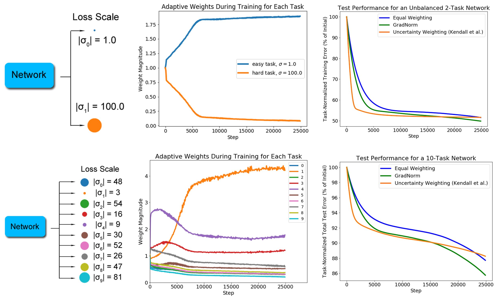

Turn down the loud tasks, turn up the quiet ones, automatically.
On this page
GradNorm takes on the scale and speed problems with one idea: stop hand-tuning the loss weights and let training learn them, so every task ends up equally loud and no task is left behind. This is the first of the five method pages, and it needs no new math beyond norms and ratios.
GradNorm: Gradient Normalization for Adaptive Loss Balancing in Deep Multitask Networks.
ICML 2018 · arXiv:1711.02257
The authors were chasing a specific dream: one visual system doing full scene understanding, many perceptual tasks at once, on hardware with real limits, phones, wearables, drones. One shared network is the natural answer: it is efficient, and the shared features can regularize each other, so in the ideal limit you get the best of both worlds, more efficiency and higher performance.
But these networks are hard to train. Every task has to be balanced properly so the shared parameters converge to features useful across all of them. Earlier approaches tried to fix the imbalance in the forward pass, by engineering feature relationships or searching architectures. The authors' key point is that those approaches miss the real mechanism: a task that dominates training necessarily expresses that dominance as large gradients. The imbalance you see in the losses is, at its root, an imbalance in the backpropagated gradients.
So they attacked the root instead of the architecture: tune the gradient magnitudes directly, through the loss weights. Each weight \(w_i\) couples linearly into its task's backpropagated gradients, which makes the weights a clean lever. The catch is that the right setting changes at every training step, and finding it by hand is what they call, in the abstract, a tedious search process that incurred exponentially more compute for each task added. GradNorm is their answer: balance training automatically, match the accuracy of exhaustive grid search, and only ever tune one knob, \(\alpha\).
I picture K coaches all shouting advice at one athlete, the shared trunk. The loudest coach, the one with the biggest gradient, is the only one the athlete hears, and the coach whose part of the training is nearly done keeps shouting anyway. GradNorm is the moderator in the room. It puts a volume knob \(w_i\) in front of each coach and keeps turning the knobs so that (a) everyone is equally easy to hear, and (b) a coach whose part of the job is falling behind gets turned up for a while. There is even a strength dial, \(\alpha\), for how hard the moderator pushes for equal progress.
Every training step, each task produces a gradient: a to-do list of changes to the shared weights that would help that task. If task 1's list is full of small numbers and task 2's is full of huge ones, the sum looks like task 2's list. GradNorm's answer: adjust the knobs a little every step using two measurements, taken at the last shared layer \(W\), the spot where the fight actually happens (about 5% extra training cost on NYUv2).
Task \(i\)'s loudness at step \(t\): the length of the gradient of its weighted loss, at the last shared layer. The gradient of \(w_i L_i\) is just \(w_i\) times the gradient of \(L_i\), a constant passes straight through, so loudness is knob times raw gradient length. Turning the knob up makes the task louder by exactly that much. That is the lever GradNorm pulls. The average \(\bar{G}_W\) across tasks is the reference volume everyone is compared against. In the worked example below the measured loudnesses are \(G_1 = 4\) and \(G_2 = 400\), so the reference volume is \(\bar{G}_W = (4 + 400)/2 = 202\).
Current loss over initial loss: unit-free progress. The division is the point: a depth loss near 800 and a classification loss near 2 cannot be compared directly, but "how much of my journey is left?" means the same thing for both. A small ratio means the task learned fast, hence the name inverse training rate. In the worked example: \(\tilde{L}_1 = 0.5/2 = 0.25\) and \(\tilde{L}_2 = 600/800 = 0.75\).
Each ratio divided by the group average. \(r = 1\): on pace. \(r = 0.5\): ahead. \(r = 1.5\): behind, needs attention. The ratio by itself does not tell you who needs help: if every task sits at 0.75, nobody is behind. The problem is tasks falling out of sync, and you only spot that by comparing each task to the group. Nice side effect: if all tasks move at the same speed, every \(r_i\) stays at 1 and GradNorm does nothing. It only acts when tasks drift apart. In the worked example the mean ratio is \((0.25 + 0.75)/2 = 0.5\), so \(r_1 = 0.25/0.5 = 0.5\) (ahead) and \(r_2 = 0.75/0.5 = 1.5\) (behind).
Average loudness, boosted for whoever is behind. Two fixes in one formula. The average \(\bar{G}_W\) pulls everyone toward the same volume, curing the scale problem. The factor \([r_i]^{\alpha}\) turns the volume up for tasks that are behind, curing the speed problem. The exponent \(\alpha\) sets how hard the boost pushes.
A sum of misses: how far is each actual loudness from its target? Then ordinary gradient descent on this penalty, but the things being adjusted are the knobs \(w_i\), not the network. Two details turn this from a guess into a thermostat:
GradNorm is a thermostat, not a guess. Every step visits four stations: sense (measure loudness and progress) → compare (set targets) → correct (nudge the weights) → renormalize (clamp the budget). Because the loop re-measures after every correction, no lucky initial setting of the weights is ever needed.
# after the forward pass: losses = [L_1..L_K]; w = trainable task weights
G = [norm(grad(w[i] * losses[i], W)) for i in range(K)] # loudness per task
ratio = losses / losses_0 # progress so far, unit-free
r = ratio / mean(ratio) # who is behind the pack? (r > 1 = behind)
target = mean(G) * r ** alpha # average loudness, boosted for laggards
L_grad = sum(abs(G - target)) # how far each norm is from its target
w = w - lr_w * grad(L_grad, w) # nudge ONLY the weights
w = w * K / sum(w) # fixed budget: one task up, another downTwo tasks, mid-training: \(L_1(0) = 2\), \(L_1(t) = 0.5\) (nearly finished); \(L_2(0) = 800\), \(L_2(t) = 600\) (far from done). Measured loudness: \(G_1 = 4\), \(G_2 = 400\), average 202. With \(\alpha = 0.5\), one computation per line:
Task 1 is too quiet (\(4 \ll 143\)) so its weight rises; task 2 is too loud (\(400 \gg 247\)) so its weight falls. The scale term pulls both toward 202 while the rate term boosts whoever is behind: task 2 gets a \(1.5^{0.5} \approx 1.22\times\) boost, task 1 a \(0.5^{0.5} \approx 0.71\times\) discount.
This is a schematic replay of the paper's Figure 2 toy: one shared trunk, two tasks, the second task starting \(S_2\) times louder. (The paper uses a 100× output scale and reports curves; the replay exaggerates the gap so it shows.) Three runs race in every panel: each task trained alone (gray, the best it could hope for), both with fixed equal weights (red), and both with GradNorm (purple).
(a) task 1 loss, the quiet one
(b) task 2 loss, the loud one
(c) the knobs GradNorm turns (w1 + w2 = 2 always)
(d) the loudness gap G2/G1: the mechanism itself START
Algorithm 1 is a loop that runs every training step. Replay one full turn of it below, then move α and watch the thermostat's response change.
Repeat every training step: the loop re-measures after every correction, so no lucky initial weights are needed.
α response, schematic: the behind task's weight over 150 steps
The paper's own version of this toy uses a 100× output scale and reports curves rather than single numbers. With fixed equal weights, the quiet task stalls far short of its solo run while the loud task is hurt too: the interference is not zero-sum. GradNorm turns the loud task's weight down and the quiet one's up. In this replay the gap does not drift into triple digits: it starts there, at 300:1 with the default scale, in both runs. The difference is how fast it collapses. GradNorm has it down to 16:1 by step 50 while equal weights still sits at 112:1, and that early rebalancing is what frees the quiet task: by step 100 its loss is 0.653 with GradNorm while it is still stalled at 0.979 under equal weights. That equalizing of loudness is the entire mechanism. Walk the real figure below.
Tap a numbered region or press Play. The white veil spotlights one column at a time; nothing is drawn over the figure itself.

Pick a region. Tap a numbered column on the figure, or press Play for the three-stop tour.
Rebuilt from Figure 2 of Chen et al. (ICML 2018). arXiv:1711.02257
Figure 2, verbatim caption: "Gradient Normalization on a toy 2-task (top) and 10-task (bottom) system. Diagrams of the network structure with loss scales are on the left, traces of wi(t) during training in the middle, and task-normalized test loss curves on the right. α=0.12 for all runs."
Chen, Z., Badrinarayanan, V., Lee, C.-Y., Rabinovich, A. GradNorm: Gradient Normalization for Adaptive Loss Balancing in Deep Multitask Networks. ICML 2018. arXiv:1711.02257. https://arxiv.org/abs/1711.02257
| Knob | What it does | How to set it | If you get it wrong |
|---|---|---|---|
α |
How hard to push for equal progress; the exponent in \(\bar{G}_W \cdot [r_i]^{\alpha}\). \(\alpha = 0\) switches the progress meter off (fixes scale only); \(\alpha = 1.5\) is the NYUv2 value. | Start at 0.5 for similar tasks, 1 to 1.5 for dissimilar ones. Results are not very sensitive, treat it as a coarse dial. | Too small: a task that is always behind never gets volume. Too large: weights swing back and forth and training swings with them. |
λw |
How fast the knobs move: the learning rate of the weights themselves (the network's own rate is separate). | 10 to 100× smaller than the network's rate (the paper uses 0.025 with Adam for the weight updates on NYUv2). When in doubt, go small. | Too big: weights overcorrect, loudness chases its own tail. Too small: balance arrives after the early, most damaged part of training. |
W |
The reference layer where loudness is measured: the last shared layer by default. | Keep the default: deepest point still shared by all tasks, one extra backward pass per task. | Earlier layers catch tasks before their effects have mixed; the heads measure the wrong thing entirely. |
Reach for it when your tasks have very different loss scales or learning speeds. The classic case is dense prediction (segmentation + depth + normals).
Costs: one extra backward pass per task to get the per-task norms at \(W\), plus a second-order term through \(L_{\text{grad}}\). Modest in practice.
Keep in mind: GradNorm is a heuristic with no convergence guarantee, and it says nothing about gradient direction. Two perfectly balanced gradients can still point against each other. That is what PCGrad and CAGrad are for.
The volume knobs are balanced. But what if the directions themselves fight?